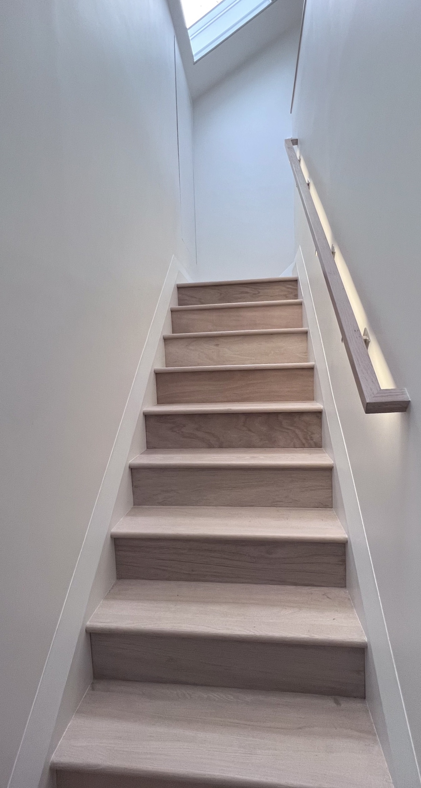
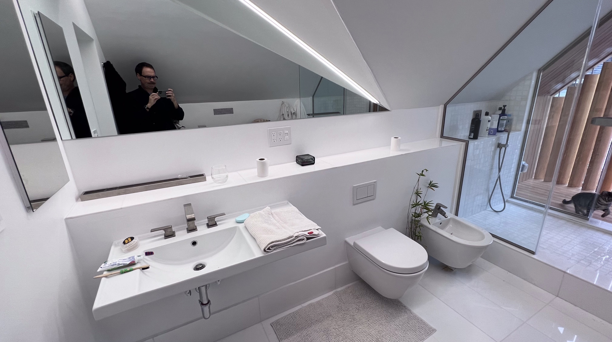
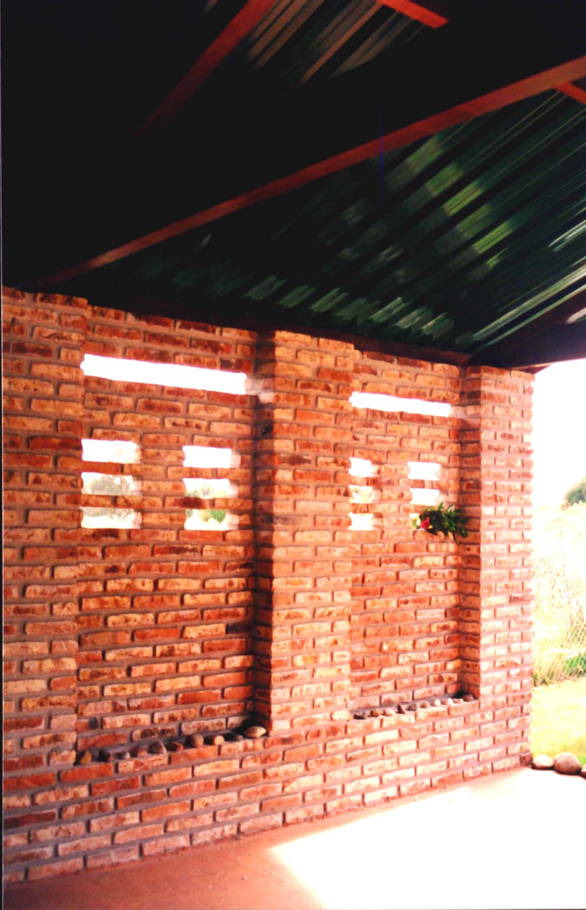
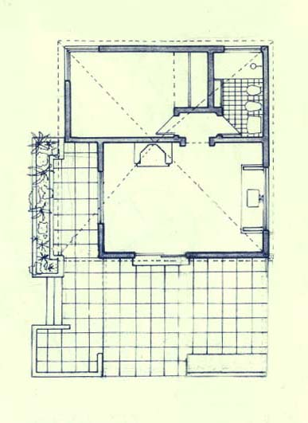

Small
Upper Cut

Bentonville, AR, USA
This art installation commemorates the first regulation cricket grounds in Arkansas and celebrates the local residents whose country of origin is one in which cricket is the most popular sport. The 31-foot-long sustainable wood sculpture takes the shape of a gigantic cricket bat held by batting gloves that have just hit an 'upper cut.'
The piece combines high-tech and low-tech approaches to bridge the gap between tradition and innovation. The irregular wood cladding design represents the texture of the batting gloves and leg pads used in the sport. Each piece of wood is intentionally different to illustrate how each component comes together to form a team, just as in the sport itself. And like the sport, it appears neat and polished from afar but reveals its real and rugged details up close.
Funded by the Bentonville Advertising and Promotions Commission and Bentonville Parks and Recreation
- 
- 


Tube of Light
New York, USA
Addition of a bedroom and a bathroom in the attic of an existing house.
Alternative typologies: the shower opens to a wooden terrace.
CAM + Furniture Design

Munich, Germany,
Sinuouscapes (bed + bed + desk)
Excursions on fluidity
@ Mr. Important Design: Electric Muscle
Dubai, United Arab Emirates,
This small but powerful nightclub projects a vibrant atmosphere thanks to a carefully crafted combination of LED sky ponds, faceted walls, reflective surfaces and linear lighting. Like a tense muscle reacting to the electrochemical pulses transmitted by the neurons, the energy of the night is transported by lines of lights on the walls and projected on the whole space through a myriad of reflections. LED screens on the ceiling, the sky ponds, are the visual engines of the club, condensing and expanding the flow of energy.
Mr. Important Design, Charles Doell Principal in Charge
Tile Twist

Las Flores, Maldonado, Uruguay
This house sits on a narrow site in a particularly dense area of a beach resort. Thus, the program is stacked in two floors, freeing ground space around the house and providing correct orientation for sunlight incidence. The alignment of the lateral façade is affected by a slight twist that generates, at the same time, a better front-rear connection and a rich variety of volumetric and spatial relations. Internally, all service spaces are located at ground level, while multiuse living rooms are placed on the upper floor and at the front of the house, in order to maximize occupancy types.
- 
Brick and Green
Las Flores, Maldonado, Uruguay
Garden houses for preparing barbecues are a tradition in Uruguay. The program usually includes a fireplace, a kitchen counter and a small deposit, like in this case. Here, we developed a careful arrangement of the brickwork under a large roof, generating a protected area with visual connections towards the environment.
- 
Thatched Poncho
Solís, Maldonado, Uruguay
This house was designed as a small shelter for having a pause after a day in the beach. The plan explores the idea of outdoors dwelling, defining the living room as an outdoor space. This open space, contained and protected by benches and planters is the semantic center of the house. It is the interface between exterior and interior, the hinge between the protected interior spaces and the natural gardens. As a constant practice in the work of the studio, local labor and local techniques (whitewashed brick walls and thatched roofs) were used in this construction, generating an environmentally conscious connection with the surroundings and the site.
Brick and Straw
Las Flores, Maldonado, Uruguay
This small guesthouse with a fireplace for barbecuing was built according to local construction techniques. An earthy and homely feeling is carefully crafted through the detailed brickwork in floors and walls.